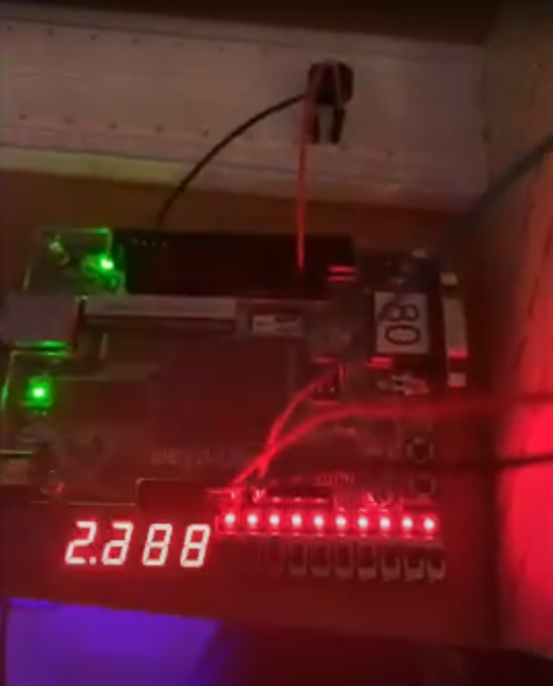
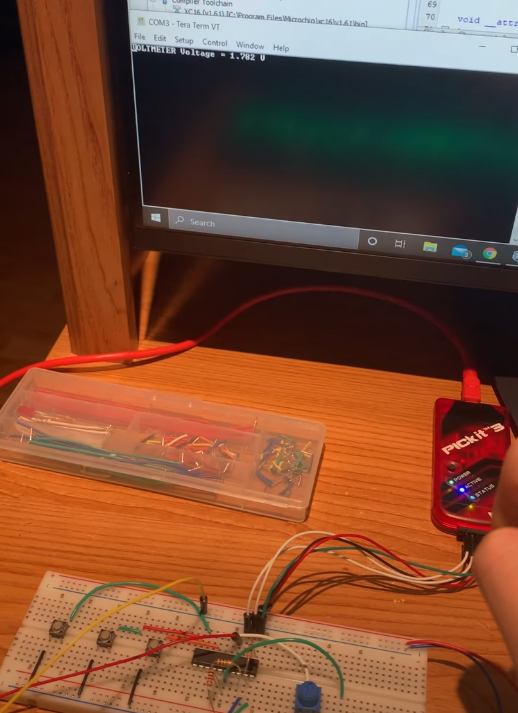
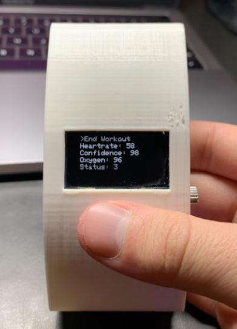

\
Hack@DAC 2022
Hack@DAC is the world's largest hardware security capture the flag competition and consists of two phases. Phase I is completed remotely, and the top performing teams are invited to the Design Automation Conference (DAC) to participate in phase II. In phase 1, I was given an security-enhanced OpenPiton/CVA6 SoC design with intentional security vulnerabilities inserted by experts from Intel and tasked with completing its security verification. I followed a systematic approach, developed using the skills and knowledge gained through my research work and was able to finish phase I in third place.
In phase II, I was given Google's OpenTitan Root of Trust (RoT) SoC and tasked with completing its security verification again, this time in an intensive 48 hour period. I finished the competition in second place, with PhD teams from New York University and University of Texas Dallas finishing in first and third place respectively.

Proximity-controlled System
This FPGA project utilized an infared proximity sensor, two switches and two pushbuttons as inputs, and a buzzer, four 7-segment displays and an LED array as outputs.
An ADC was used to read the proximity sensor output and was converted to a distance value using a LUT obtained using experimental values and curve fitting. The value read from the sensor was also displayed on the 7-segment displays, as either a voltage or distance value, and used to control the frequency of the buzzer and the brightness of the LEDs using PWM.

Countdown Timer
This is the first project I've completed using SystemVerilog, and the first FSM I've implemented using an HDL. This project uses two pushbuttons and one switch as inputs - the switch is used as a reset, and the two pushbuttons are used as a start/stop and to increment the timer. The current value of the timer is displayed on four 7-segment displays, two for minutes (0-99) and two for seconds (0-59). When the end of the timer is reached, an array of LEDs blinks at a 1 Hz frequency and 50% duty cycle.

PIC-based digital multimeter
This project is a PIC16 based multimeter that can measure DC voltage and resistance. It reads an input voltage using an ADC and outputs a voltage/resistance value to a TeraTerm window using a UART module. The voltage it can read is constrained by the power rails(0-3.3V) and the upper limit of the resistance it can read was determined experimentally and is most likely due to a combination of low supply voltage and lack of precision. The system switches between three states: Idle, Voltmeter, and Ohmmeter, and was programmed to be as power efficient as possible through the use of interrupts and proper clock management.

REJOY Fitness Tracker
This project is an Arduino-based wearable fitness tracker and was completed during the Winter 2021 Semester. The device is a fully functional wearable fitness tracker that measures and stores data like heart rate and blood oxygen level using an off the shelf sensor, and steps taken using the accelerometer and an algorithm to convert movement to steps. It also integrated other components like an OLED display, a Real Time Clock (RTC), a rotary encoder, an SD card module, a BLE module, and a 5V regulated power supply consisting of a LiPo battery and a charger board.
The OLED and rotary encoder served as the device UI, displaying data and time, and switching between modes. The data readings were stored locally on the device using the SD card module and could connect to another device using Bluetooth to display the data using a web-based UI for meaningful data visualizations and trends. The Design Specification is available for more detailed information!